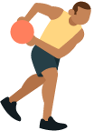
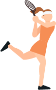
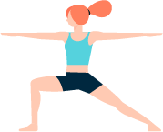

Bieganie to świetna aktywność fizyczna, która może przynieść wiele różnych
korzyści – zależnie od tego, czego oczekujesz. Przede wszystkim: to świetny sposób na budowę
ogólnej wytrzymałości, czyli pracy nad naszą kondycją. Przy odpowiednich warunkach bieganie
pomoże też schudnąć i wysmuklić sylwetkę, redukując ilość tkanki tłuszczowej.

Koszykówka jest to sport, który wymaga od nas biegania,
skakania i ogólnej dobrej kondycji fizycznej. Grać w koszykówkę możemy
zarówno rekreacyjnie - w ramach rozrywki, ale także bardziej wytrzymałościowo -
łącząc przyjemne z pożytecznym, aby spalić kalorie i wyszczuplić sylwetkę.

Squash - jest to idealny sport dla każdego, kto chce zrzucić parę
kilo – jedna rozgrywka pozwala spalić nawet 1000 kcal!
Dzięki grze rozwiniesz swoją wydolność, koordynację, oraz tkankę mięśniową,
zapewniając swojemu ciału wszechstronny rozwój. Poza tym gra w squasha jest
zwyczajnie bardzo przyjemna, a zasady gry w squash bardzo proste.

Joga to jeden z sześciu najstarszych systemów filozoficznych.
Poprawia siłę mięśni głębokich i ścięgien, poprawia ukrwienie pleców, wzmacnia
system nerwowy i oczywiście pomaga rozciągnąć i rozluźnić mięśnie. Inne pozytywne
efekty jogi może to polepszenie kondycji i zmniejszenia wagi ciała. Z tego powodu
to świetna opcja dla tych, którzy nie lubią intensywnych ćwiczeń na siłowni.

Tenis ziemny może być traktowany nie tylko jako sport, ale też jako forma rekreacji.
Jest aktywnością całoroczną, uprawianą na kortach zamkniętych lub na świeżym powietrzu.
Gra w tenisa angażuje wszystkie grupy mięśniowe,
przez co wpływa na poprawienie kondycji fizycznej. Dyscyplina ta staje się alternatywą dla siłowni
czy biegania dzięki swej specyfice.